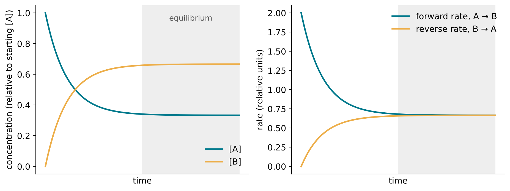
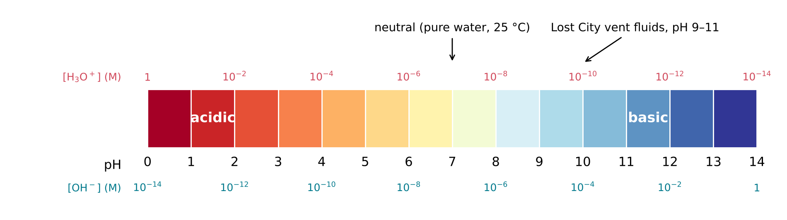
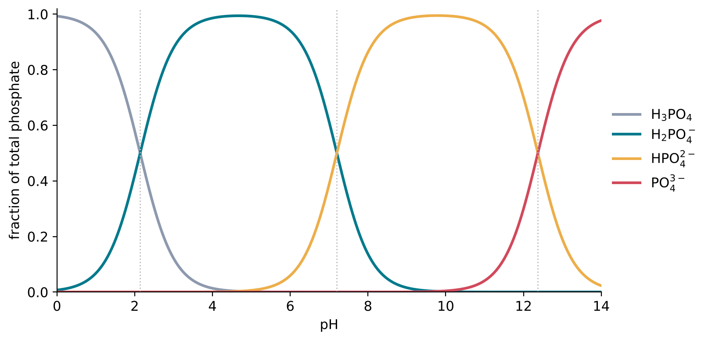

8 Equilibrium, Acids and pH
The question of this chapter
Many reactions do not go to completion. They stop partway, with reactants and products both present, and nothing further seems to happen however long one waits. This chapter asks: where does a reaction stop, and why? The answer is chemical equilibrium, a balance between a reaction and its reverse that can be described by a single number, the equilibrium constant. The same idea explains what acids and bases do in water, what pH measures, and why the joining of building blocks into chains is so difficult in dilute solution.
8.1 Dynamic equilibrium
Two reactions at once
Consider a reversible reaction, A \(\rightleftharpoons\) B. When A is first dissolved, only the forward reaction, A → B, can occur, and B begins to accumulate. As soon as some B is present, the reverse reaction, B → A, also begins. As A is used up, the forward reaction slows; as B accumulates, the reverse reaction speeds up. Eventually the two rates become equal. From then on, A is converted into B exactly as fast as B is converted back into A, and the amounts of both stay constant (Figure 8.1).
This state is called chemical equilibrium. It is a dynamic equilibrium: at the level of molecules, both reactions continue without pause, but their effects cancel, and nothing changes on the scale of the whole sample. The same final state is reached whether one starts with pure A, pure B, or any mixture of the two, provided that the temperature and the total amounts are the same.

Equilibrium is not equality
Equilibrium does not mean that reactants and products are present in equal amounts. It means that their amounts no longer change. In some reactions, the equilibrium mixture contains almost nothing but products; in others, almost nothing but reactants; and in many, appreciable amounts of both. Which of these applies is expressed by the equilibrium constant.
8.2 The equilibrium constant
Definition
For a reaction written in general form as
\[ a\,\mathrm{A} + b\,\mathrm{B} \rightleftharpoons c\,\mathrm{C} + d\,\mathrm{D} \]
where the lower-case letters are the coefficients, the equilibrium constant K is
\[ K = \frac{[\mathrm{C}]^{c}\,[\mathrm{D}]^{d}}{[\mathrm{A}]^{a}\,[\mathrm{B}]^{b}} \]
where the square brackets denote the concentrations at equilibrium. The products appear in the numerator and the reactants in the denominator, each raised to the power of its coefficient. At a given temperature, K has a fixed value for each reaction, whatever the starting amounts.
Two conventions make K a pure number and keep it simple. First, each concentration is divided by a standard concentration of 1 mol L−1, so that [A] stands for the number of moles per litre without the unit. Strictly, K is defined with activities, effective concentrations that allow for the interactions between dissolved particles, but in dilute solutions activities are close to concentrations divided by 1 mol L−1. Second, pure solids and pure liquids, and the solvent of a dilute solution, have activities of 1 and are left out of the expression. In reactions in dilute aqueous solution, water therefore does not appear in K, even when it is a reactant or a product.
What the size of K means
- If K is much larger than 1, the numerator dominates at equilibrium: the reaction lies far to the right, and the equilibrium mixture consists mostly of products.
- If K is much smaller than 1, the reaction lies far to the left, and little product forms.
- If K is close to 1, appreciable amounts of both reactants and products are present.
Because equilibrium constants range over many orders of magnitude, from 10−30 or less to 1030 or more, they are often given as logarithms, in the form pK = −log10 K, which turns the range into a manageable span of numbers. This is the origin of the “p” in pH and pKa, described below.
An important consequence: dilution and joining
The concentrations in K are raised to powers, and this has a consequence that runs through the whole chemistry of the origin of life. Consider a condensation in water, in which two building blocks A and B join to form AB and release water:
\[ \mathrm{A} + \mathrm{B} \rightleftharpoons \mathrm{AB} + \mathrm{H_2O} \]
Since water is the solvent, it does not appear in K, and
\[ K = \frac{[\mathrm{AB}]}{[\mathrm{A}]\,[\mathrm{B}]}, \qquad \text{so} \qquad \frac{[\mathrm{AB}]}{[\mathrm{A}]} = K \times [\mathrm{B}] \]
The fraction of A that is joined to B depends not only on K but also on the concentration of B. Suppose, for example, that K = 10. If B is present at 1 mol L−1, then [AB]/[A] = 10: most of A is joined. If B is present at 1 mM, then [AB]/[A] = 10 × 0.001 = 0.01: only about 1 % of A is joined. At 1 \(\mu\)M, only about one A in 100 000. The more dilute the solution, the more the equilibrium favours the separate building blocks and the less it favours the joined product. Dilute solutions favour hydrolysis.
This simple relation explains why the chains of life do not form spontaneously from dilute building blocks in water, and why so much attention is paid to ways of concentrating them, by evaporation, freezing or adsorption on mineral surfaces, and of removing water, by drying.
8.3 Shifting an equilibrium
Le Chatelier’s principle
An equilibrium can be disturbed by changing the conditions: adding or removing a reactant or product, changing the temperature, or, for gases, changing the pressure. The response follows a general rule known as Le Chatelier’s principle: when a system at equilibrium is disturbed, the equilibrium shifts in the direction that partly counteracts the disturbance.
- Adding a reactant shifts the equilibrium to the right, consuming some of the added reactant and forming more product. Removing a product has the same effect. A reaction whose product is continually removed, for example because it crystallises out of solution or escapes as a gas, can be driven almost to completion even if its K is small.
- Removing water from a condensation, A + B \(\rightleftharpoons\) AB + H2O, shifts it towards AB. In dilute solution the water is the solvent and cannot be removed without concentrating everything else; but when a solution is dried, water is no longer present in excess, its activity falls below 1, and condensation becomes more favourable. This is one reason why wet-dry cycles are thought to have helped build chains on the early Earth.
- Changing the temperature changes the value of K itself. Raising the temperature favours the direction that absorbs heat. Chapter 9 explains why.
Adding a catalyst, a substance that speeds up a reaction without being consumed (Chapter 10), does not shift an equilibrium at all. It speeds up the forward and reverse reactions by the same factor, so that equilibrium is reached sooner, but the equilibrium mixture is the same.
8.4 Water, acids and bases
Water ionises itself
Water itself takes part in an equilibrium. A small fraction of water molecules transfer a proton to a neighbouring water molecule:
\[ 2\,\mathrm{H_2O} \rightleftharpoons \mathrm{H_3O^+} + \mathrm{OH^-} \]
Because water is the solvent, its activity is 1, and the equilibrium constant reduces to the product of the activities of the two ions. This constant is the ion product of water, Kw. At 25 °C, pKw = −log10 Kw = 13.99 (International Association for the Properties of Water and Steam 2024), so Kw = 1.0 × 10−14. In pure water the two ions are present in equal amounts, each at a concentration of about 10−7 mol L−1. Since pure water contains about 55 mol L−1 of water molecules (Chapter 6), only about two molecules in a thousand million are ionised at any moment.
pH
The concentration of hydronium ions in a solution determines its acidity. Because this concentration varies over many orders of magnitude, it is expressed on a logarithmic scale (Chapter 1). The pH of a solution is defined as
\[ \mathrm{pH} = -\log_{10} a(\mathrm{H_3O^+}) \]
where a(H3O+) is the activity of the hydronium ion, which in dilute solution is close to its concentration in mol L−1. A solution with [H3O+] = 10−7 M has pH 7; one with 10−3 M has pH 3. Each unit of pH is a factor of ten, so a solution of pH 3 contains ten thousand times as many hydronium ions as a solution of pH 7.
Since the activities of H3O+ and OH− multiply to Kw, an increase in one means a decrease in the other. A solution is neutral when the two are equal, which at 25 °C is at pH 7.00. A solution with a lower pH is acidic, and one with a higher pH is basic (or alkaline). Figure 8.2 shows the scale.

Neutral is not always pH 7
The value of Kw depends strongly on temperature, and so does the pH of neutral water (Table 8.1). At 0 °C neutral water has pH 7.48, and at 100 °C it has pH 6.13. A hot spring at 100 °C with pH 6.5 is therefore slightly basic, not acidic. This matters when comparing the waters of cold pools, hot springs and hydrothermal vents, all of which have been proposed as settings for the origin of life.
| Temperature (°C) | pKw | pH of neutral water |
|---|---|---|
| 0 | 14.95 | 7.48 |
| 25 | 13.99 | 7.00 |
| 100 | 12.25 | 6.13 |
8.5 Strong and weak acids
Strong acids
An acid is a proton donor (Chapter 7). A strong acid, such as hydrochloric acid, gives up its proton to water essentially completely; in its solution, no undissociated HCl molecules remain. A 0.01 M solution of hydrochloric acid therefore contains 0.01 M H3O+ and has pH 2.
Weak acids and Ka
Most acids in the chemistry of life are weak acids: they donate their protons only partly, and an equilibrium is established between the acid and its deprotonated form. For a weak acid HA,
\[ \mathrm{HA} + \mathrm{H_2O} \rightleftharpoons \mathrm{H_3O^+} + \mathrm{A^-} \]
The species A− that remains after HA has lost its proton is called the conjugate base of HA. The equilibrium constant of this reaction, with water omitted, is the acid dissociation constant:
\[ K_\mathrm{a} = \frac{[\mathrm{H_3O^+}]\,[\mathrm{A^-}]}{[\mathrm{HA}]} \]
and it is usually given as pKa = −log10 Ka. The smaller the pKa, the stronger the acid. Acetic acid, the acid of vinegar, has pKa = 4.76 (Goldberg et al. 2002).
pH and pKa: which form is present?
Taking logarithms of the expression for Ka gives a simple and very useful relation between the pH and the ratio of the two forms of an acid:
\[ \mathrm{pH} = \mathrm{p}K_\mathrm{a} + \log_{10}\frac{[\mathrm{A^-}]}{[\mathrm{HA}]} \]
It is known as the Henderson-Hasselbalch equation, and its consequences can be read off directly.
- When pH = pKa, the logarithm is zero, so [A−] = [HA]: the acid is half dissociated.
- For each unit of pH above the pKa, the ratio [A−]/[HA] increases tenfold. Two units above the pKa, the acid is 99 % in its deprotonated form, A−.
- For each unit below, the ratio decreases tenfold. Two units below, the acid is 99 % in its protonated form, HA.
At pH 7, acetic acid, with pKa = 4.76, is more than 99 % in the form of the acetate ion, CH3COO−. The carboxy groups of amino acids and other biological acids are likewise almost entirely deprotonated, and negatively charged, at neutral pH.
Phosphoric acid and phosphate
Phosphoric acid, H3PO4, has three O–H groups, each of which can lose a proton, with three successive pKa values of about 2.1, 7.2 and 12.4 (Wikipedia contributors, n.d.). Depending on the pH, it is present as H3PO4, H2PO4−, HPO42− or PO43− (Figure 8.3). Near pH 7, H2PO4− and HPO42− are present in similar amounts. The general word phosphate covers all these forms.

In RNA, each phosphate group is joined to two sugars and keeps only one O–H group of its own. This remaining group is a strong acid, much stronger than the second O–H group of phosphoric acid, and at neutral pH it has lost its proton: each phosphate linkage of an RNA chain carries one negative charge (Westheimer 1987). An RNA chain of 100 nucleotides carries about 100 negative charges along its backbone.
8.6 Buffers
A solution that contains a weak acid together with its conjugate base, in comparable amounts, resists changes in pH. Such a solution is called a buffer. If a strong acid is added, the added H3O+ ions are largely taken up by A−, forming HA; if a strong base is added, the OH− ions are largely neutralised by HA, forming A− and water. In either case the ratio [A−]/[HA] changes only a little, and by the Henderson-Hasselbalch equation the pH changes only a little.
A buffer works best when the pH is close to the pKa of its acid, where the two forms are present in similar amounts. A mixture of H2PO4− and HPO42−, with pKa = 7.2, buffers near neutral pH, and phosphate buffers are among the most widely used in laboratories. Natural waters are also buffered, mainly by dissolved carbon dioxide and its ions, and by reactions with minerals. Laboratory experiments on the origin of life are usually run in buffered solutions, so that the pH stays where the experimenter has set it; on the early Earth, the pH of each setting would have been set by its own buffers.
Key points
- A reversible reaction reaches dynamic equilibrium when its forward and reverse rates are equal; the amounts then stay constant, though both reactions continue.
- For aA + bB \(\rightleftharpoons\) cC + dD, K = [C]c[D]d / ([A]a[B]b), with concentrations in mol L−1 (strictly, activities). Pure solids, pure liquids and the solvent are left out. K \(\gg\) 1 favours products; K \(\ll\) 1 favours reactants.
- For a condensation A + B \(\rightleftharpoons\) AB + H2O in water, [AB]/[A] = K[B]: dilution strongly favours the separate building blocks.
- Le Chatelier’s principle: a disturbed equilibrium shifts to counteract the disturbance. Removing a product or water drives a reaction forward. A catalyst does not shift an equilibrium.
- Water ionises: Kw = 1.0 × 10−14 at 25 °C. pH = −log10 a(H3O+). Neutral water has pH 7.00 at 25 °C, 7.48 at 0 °C and 6.13 at 100 °C.
- Strong acids dissociate completely; weak acids partly, with Ka and pKa. pH = pKa + log10([A−]/[HA]). At pH = pKa the acid is half dissociated.
- Phosphoric acid has pKa values of about 2.1, 7.2 and 12.4. Each phosphate linkage of RNA carries one negative charge at neutral pH.
- A buffer, a weak acid with its conjugate base, resists changes in pH, best near its pKa.
Self-test
- Write the expression for K for the reaction N2(g) + 3 H2(g) \(\rightleftharpoons\) 2 NH3(g), using concentrations.
- A condensation A + B \(\rightleftharpoons\) AB + H2O has K = 100. What fraction of A is joined when [B] is held at 0.1 M, and when it is held at 10 \(\mu\)M?
- What is the pH of a solution with [H3O+] = 2.0 × 10−5 M? Is it acidic or basic at 25 °C?
- Formic acid has pKa = 3.75. What is the ratio [HCOO−]/[HCOOH] at pH 5.75?
- Why does adding a little hydrochloric acid to a phosphate buffer at pH 7.2 change the pH much less than adding the same amount to pure water?